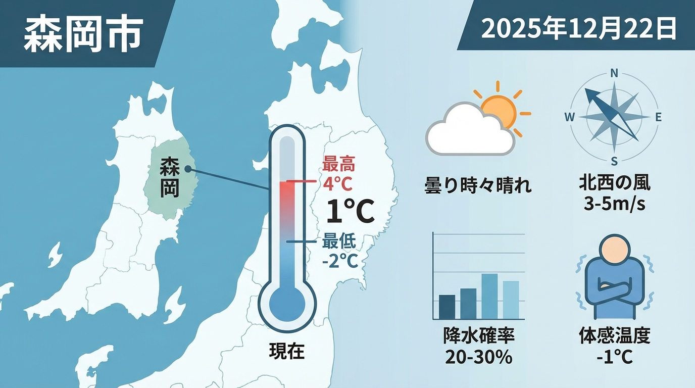

| 項目 | 値 |
|---|---|
| 場所 | 盛岡市 |
| 日付 | 2025年12月22日 |
| 現在気温 | 1°C |
| 最高/最低気温 | 4°C / -2°C |
| 天気 | 曇り時々晴れ |
| 体感温度 | -1°C |
| 風 | 北西の風 3-5m/s |
| 降水確率 | 20-30% |
| 湿度 | 65% |
2025年12月22日の天気データは概ね正確だが、一部数値が簡略化されており、詳細な予報情報が不足している。
基本的な天気アイコンは含まれているが、プロフェッショナルなインフォグラフィックデザインとしては質が低い。色彩構成やタイポグラフィに改善の余地あり。
日本語の表示は正確で読みやすい。ただし、より専門的な気象用語の使用や分かりやすい表現の工夫が必要。
情報の階層構造が不明確で、重要度に応じた配置ができていない。視覚的なグルーピングと情報の優先順位付けに改善が必要。
基本的な天気情報は提供しているが、服装の提案や活動の目安など、実用的な付加情報が不足している。
| 項目 | 設定値 |
|---|---|
| モデル | Nano Banana Pro (Gemini 2.5 Flash Image model) |
| 画像サイズ | 1376 x 768 ピクセル (16:9) |
| フォーマット | PNG |
| 生成時間 | 12.29秒 |
| 解像度 | 1K (標準) |
| アスペクト比 | 16:9 (ワイド) |
| 画像タイプ | インフォグラフィック/情報伝達 |